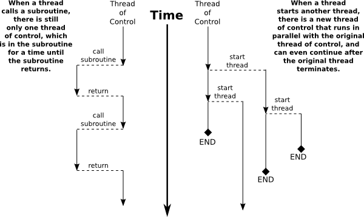

Introduction to Threads
Like people, computers can multitask. That is, they can be working on several different tasks at the same time. A computer that has just a single central processing unit can't literally do two things at the same time, any more than a person can, but it can still switch its attention back and forth among several tasks. Furthermore, most computers, and even mobile devices, now have more than one processing unit, and such computers can literally work on several tasks simultaneously. It is likely that from now on, most of the increase in computing power will come from adding additional processors to computers rather than from increasing the speed of individual processors. To use the full power of these multiprocessing computers, a programmer must do parallel programming, which means writing a program as a set of several tasks that can be executed simultaneously. Even on a single-processor computer, parallel programming techniques can be useful, since some problems can be tackled most naturally by breaking the solution into a set of simultaneous tasks that cooperate to solve the problem.
In Java, a single task is called a thread. The term "thread" refers to a "thread of control" or "thread of execution," meaning a sequence of instructions that are executed one after another—the thread extends through time, connecting each instruction to the next. In a multithreaded program, there can be many threads of control, weaving through time in parallel and forming the complete fabric of the program. (Ok, enough with the metaphor, already!) Every Java program has at least one thread; when the Java virtual machine runs your program, it creates a thread that is responsible for executing the main routine of the program. This main thread can in turn create other threads that can continue even after the main thread has terminated. In a GUI program, there is at least one additional thread, which is responsible for handling events and drawing components on the screen. In JavaFX, that thread is the application thread.
Unfortunately, parallel programming is even more difficult than ordinary, single-threaded programming. When several threads are working together on a problem, a whole new category of errors is possible. This just means that techniques for writing correct and robust programs are even more important for parallel programming than they are for normal programming. On the other hand, fortunately, Java has a nice thread API that makes basic uses of threads reasonably easy. It also has a variety of standard classes to help with some of the more tricky parts or to hide them entirely. It won't be until midway through Section 12.3 that you'll learn about the low-level techniques that are necessary to handle the trickiest parts of parallel programming. In fact, a programmer can do a lot with threads without ever learning about the low-level stuff.
Creating and Running Threads
In Java, a thread is represented by an object belonging to the class java.lang.Thread (or to a subclass of this class). The purpose of a Thread object is to execute a single method and to execute it just once. This method represents the task to be carried out by the thread. The method is executed in its own thread of control, which can run in parallel with other threads. When the execution of the thread's method is finished, either because the method terminates normally or because of an uncaught exception, the thread stops running. Once this happens, there is no way to restart the thread or to use the same Thread object to start another thread.
There are two ways to program a thread. One is to create a subclass of Thread and to define the method public void run() in the subclass. This run() method defines the task that will be performed by the thread; that is, when the thread is started, it is the run() method that will be executed in the thread. For example, here is a simple, and rather useless, class that defines a thread that does nothing but print a message on standard output:
public class NamedThread extends Thread {
private String name; // The name of this thread.
public NamedThread(String name) { // Constructor gives name to thread.
this.name = name;
}
public void run() { // The run method prints a message to standard output.
System.out.println("Greetings from thread '" + name + "'!");
}
}To use a NamedThread, you must of course create an object belonging to this class. For example,
NamedThread greetings = new NamedThread("Fred");However, creating the object does not automatically start the thread running or cause its run() method to be executed. To do that, you must call the start() method in the thread object. For the example, this would be done with the statement
greetings.start();The purpose of the start() method is to create the new thread of control that will execute the Thread object's run() method. The new thread runs in parallel with the thread in which the start() method was called, along with any other threads that already existed. The start() method returns immediately after starting the new thread of control, without waiting for the thread to terminate. This means that the code in the thread's run() method executes at the same time as the statements that follow the call to the start() method. Consider this code segment:
NamedThread greetings = new NamedThread("Fred");
greetings.start();
System.out.println("Thread has been started");After greetings.start() is executed, there are two threads. One of them will print "Thread has been started" while the other one wants to print "Greetings from thread 'Fred'!". It is important to note that these messages can be printed in either order. The two threads run simultaneously and will compete for access to standard output, so that they can print their messages. Whichever thread happens to be the first to get access will be the first to print its message. In a normal, single-threaded program, things happen in a definite, predictable order from beginning to end. In a multi-threaded program, there is a fundamental indeterminacy. You can't be sure what order things will happen in. This indeterminacy is what makes parallel programming so difficult!
Note that calling greetings.start() is very different from calling greetings.run(). Calling greetings.run() would execute the run() method in the same thread, rather than creating a new thread. This means that all the work of the run() method will be done before the computer moves on to the statements that follow the call to greetings.run(). There is no parallelism and no indeterminacy.

This discussion has assumed that the computer on which the program is running has more than one processing unit, so that it is possible for the original thread and the newly created thread to literally be executed at the same time. However, it's possible to create multiple threads even on a computer that has only one processor (and, more generally, it is possible to create many more threads than there are processors, on any computer). In that case, the two threads will compete for time on the processor. However, there is still indeterminacy because the processor can switch from one thread to another at unpredictable times. In fact, from the point of view of the programmer, there is no difference between programming for a single-processor computer and programming for a multi-processor computer, and we will mostly ignore the distinction from now on.
I mentioned that there are two ways to program a thread. The first way was to define a subclass of Thread. The second is to define a class that implements the interface java.lang.Runnable. The Runnable interface defines a single method, public void run(). Given a Runnable, it is possible to create a Thread whose task is to execute the Runnable's run() method.
The Thread class has a constructor that takes a Runnable as its parameter. When an object that implements the Runnable interface is passed to that constructor, the run() method of the thread will simply call the run() method from the Runnable, and calling the thread's start() method will create a new thread of control in which the Runnable's run() method is executed. For example, as an alternative to the NamedThread class, we could define the class:
public class NamedRunnable implements Runnable {
private String name; // The name of this Runnable.
public NamedRunnable(String name) { // Constructor gives name to object.
this.name = name;
}
public void run() { // The run method prints a message to standard output.
System.out.println("Greetings from runnable '" + name +"'!");
}
}To use this version of the class, we would create a NamedRunnable object and use that object to create an object of type Thread:
NamedRunnable greetings = new NamedRunnable("Fred");
Thread greetingsThread = new Thread(greetings);
greetingsThread.start();The advantage of doing things this way is that any object can implement the Runnable interface and can contain a run() method, which can then be executed in a separate thread. That run() method has access to everything in the class, including private variables and methods. The disadvantage is that this way of doing things is not very object-oriented: It violates the principle that each object should have a single, clearly-defined responsibility. Instead of making some random object Runnable just so that you can use it to make a thread, you can consider defining the thread using a nested class that is a subclass of the Thread class. (See Section 5.8.)
Finally, I'll note that Runnable is a functional interface, so that a Runnable object can be given as a lambda expression. In particular, the parameter to new Thread(r) can be a lambda expression. For example:
Thread greetingsFromFred = new Thread(
() -> System.out.println("Greetings from Fred!")
);
greetingsFromFred.start();To help you understand how multiple threads are executed in parallel, we consider the sample program ThreadTest1.java. This program creates several threads. Each thread performs exactly the same task. The task is to count the number of integers less than 10,000,000 that are prime. (The particular task that is done is not important for our purposes here, as long as it is something that takes a non-trivial amount of time. This is a demo program; it would be silly in a real program to have multiple threads that do the same thing, and the method that is used for counting the primes is very inefficient.) This computation should take no more than a few seconds on a modern computer. The threads that perform this task are defined by the following static nested class, where MAX is 10,000,000:
/**
* When a thread belonging to this class is run it will count the
* number of primes between 2 and MAX. It will print the result
* to standard output, along with its ID number and the elapsed
* time between the start and the end of the computation.
*/
private static class CountPrimesThread extends Thread {
int id; // An id number for this thread; specified in the constructor.
public CountPrimesThread(int id) {
this.id = id;
}
public void run() {
long startTime = System.currentTimeMillis();
int count = countPrimes(2,MAX); // Counts the primes.
long elapsedTime = System.currentTimeMillis() - startTime;
System.out.println("Thread " + id + " counted " +
count + " primes in " + (elapsedTime/1000.0) + " seconds.");
}
}The main program asks the user how many threads to run, and then creates and starts the specified number of threads:
public static void main(String[] args) {
int numberOfThreads = 0;
while (numberOfThreads < 1 || numberOfThreads > 30) {
System.out.print("How many threads do you want to use (1 to 30) ? ");
numberOfThreads = TextIO.getlnInt();
if (numberOfThreads < 1 || numberOfThreads > 30)
System.out.println("Please enter a number between 1 and 30 !");
}
System.out.println("\nCreating " + numberOfThreads
+ " prime-counting threads...");
CountPrimesThread[] worker = new CountPrimesThread[numberOfThreads];
for (int i = 0; i < numberOfThreads; i++)
worker[i] = new CountPrimesThread( i );
for (int i = 0; i < numberOfThreads; i++)
worker[i].start();
System.out.println("Threads have been created and started.");
}It would be a good idea for you to compile and run the program.
My computer has six processors. When I ran the program on that computer with using one thread, it took about 3.36 seconds. When I ran it using twelve threads, the output was:
Creating 12 prime-counting threads...
Threads have been created and started.
Thread 1 counted 664579 primes in 6.424 seconds.
Thread 11 counted 664579 primes in 6.694 seconds.
Thread 0 counted 664579 primes in 6.727 seconds.
Thread 3 counted 664579 primes in 6.74 seconds.
Thread 10 counted 664579 primes in 6.759 seconds.
Thread 7 counted 664579 primes in 6.77 seconds.
Thread 2 counted 664579 primes in 6.798 seconds.
Thread 9 counted 664579 primes in 6.792 seconds.
Thread 5 counted 664579 primes in 6.824 seconds.
Thread 4 counted 664579 primes in 6.836 seconds.
Thread 8 counted 664579 primes in 6.841 seconds.
Thread 6 counted 664579 primes in 6.877 seconds.The second line was printed immediately after the first. At this point, the main program has ended but the twelve threads continued to run. After a pause of about 6.5 seconds, all eight threads completed at about the same time. The order in which the threads complete is not the same as the order in which they were started, and the order is indeterminate. That is, if the program is run again, the order in which the threads complete will probably be different.
On this computer, twelve threads took about twice as long as one thread. This is because the computer has six processors. With twelve threads running on six processors—one-half processor per thread—each thread was only actively being executed for about half of the time, so it took twice as long to finish its task. On a single-processor computer, twelve threads would take about twelve times as long as one thread. On a computer with six or more processors, six threads might take no more time than a single thread. Because of overhead and other reasons, the actual speedup will probably be a little smaller than this analysis indicates, but on a multiprocessor machine, you should see a definite speedup. What happens when you run the program on your own computer? How many processors do you have?
Whenever there are more threads to be run than there are processors to run them, the computer divides its attention among all the runnable threads by switching rapidly from one thread to another. That is, each processor runs one thread for a while then switches to another thread and runs that one for a while, and so on. Typically, these "context switches" occur about 100 times or more per second. The result is that the computer makes progress on all the tasks, and it looks to the user as if all the tasks are being executed simultaneously. This is why in the sample program, in which each thread has the same amount of work to do, all the threads complete at about the same time: Over any time period longer than a fraction of a second, the computer's time is divided approximately equally among all the threads.
Operations on Threads
Much of Java's thread API can be found in the Thread class. However, we'll start with a thread-related method in Runtime, a class that allows a Java program to get information about the environment in which it is running. When you do parallel programming in order to spread the work among several processors, you might want to take into account the number of available processors. You might, for example, want to create one thread for each processor. In Java, you can find out the number of processors by calling the function
Runtime.getRuntime().availableProcessors()which returns an int giving the number of processors that are available to the Java Virtual Machine. In some cases, this might be less than the actual number of processors in the computer.
A Thread object contains several useful methods for working with threads. Most important is the start() method, which was discussed above.
Once a thread has been started, it will continue to run until its run() method ends for some reason. Sometimes, it's useful for one thread to be able to tell whether another thread has terminated. If thrd is an object of type Thread, then the boolean-valued function thrd.isAlive() can be used to test whether or not thrd has terminated. A thread is "alive" between the time it is started and the time when it terminates. After the thread has terminated it is said to be "dead." (The rather gruesome metaphor is also used when we refer to "killing" or "aborting" a thread.) Remember that a thread that has terminated cannot be restarted.
The static method Thread.sleep(milliseconds) causes the thread that executes this method to "sleep" for the specified number of milliseconds. A sleeping thread is still alive, but it is not running. While a thread is sleeping, the computer can work on any other runnable threads (or on other programs). Thread.sleep() can be used to insert a pause in the execution of a thread. The sleep() method can throw an exception of type InterruptedException, which is a checked exception that requires mandatory exception handling. In practice, this means that the sleep() method is usually called inside a try..catch statement that catches the potential InterruptedException:
try {
Thread.sleep(lengthOfPause);
}
catch (InterruptedException e) {
}One thread can interrupt another thread to wake it up when it is sleeping or paused for certain other reasons. A Thread, thrd, can be interrupted by calling the method thrd.interrupt(). Doing so can be a convenient way to send a signal from one thread to another. A thread knows it has been interrupted when it catches an InterruptedException. Outside any catch handler for the exception, the thread can check whether it has been interrupted by calling the static method Thread.interrupted(). This method tells whether the current thread—the thread that executes the method—has been interrupted. It also has the unusual property of clearing the interrupted status of the thread, so you only get one chance to check for an interruption. In your own programs, your threads are not going to be interrupted unless you interrupt them. So most often, you are not likely to need to do anything in response to an InterruptedException (except to catch it).
Sometimes, it's necessary for one thread to wait for another thread to die. This is done with the join() method from the Thread class. Suppose that thrd is a Thread. Then, if another thread calls thrd.join(), that other thread will go to sleep until thrd terminates. If thrd is already dead when thrd.join() is called, then it simply has no effect. The join() method can throw an InterruptedException, which must be handled as usual. As an example, the following code starts several threads, waits for them all to terminate, and then outputs the elapsed time:
CountPrimesThread[] worker = new CountPrimesThread[numberOfThreads];
long startTime = System.currentTimeMillis();
for (int i = 0; i < numberOfThreads; i++) {
worker[i] = new CountPrimesThread();
worker[i].start();
}
for (int i = 0; i < numberOfThreads; i++) {
try {
worker[i].join(); // Wait until worker[i] finishes, if it hasn't already.
}
catch (InterruptedException e) {
}
}
// At this point, all the worker threads have terminated.
long elapsedTime = System.currentTimeMillis() - startTime;
System.out.println("Total elapsed time: " + (elapsedTime/1000.0) + " seconds");An observant reader will note that this code assumes that no InterruptedException will occur. To be absolutely sure that the thread worker[i] has terminated in an environment where InterruptedExceptions are possible, you would have to do something like:
while (worker[i].isAlive()) {
try {
worker[i].join();
}
catch (InterruptedException e) {
}
}Another version of the join() method takes an integer parameter that specifies the maximum number of milliseconds to wait. A call to thrd.join(m) will wait until either thrd has terminated or until m milliseconds have elapsed (or until the waiting thread is interrupted). This can be used to allow a thread to wake up occasionally to perform some task while it is waiting. Here, for example, is a code segment that will start a thread, thrd, and then will output a period every two seconds as long as thrd continues to run:
System.out.print("Running the thread ");
thrd.start();
while (thrd.isAlive()) {
try {
thrd.join(2000);
System.out.print(".");
}
catch (InterruptedException e) {
}
}
System.out.println(" Done!");Threads have two properties that are occasionally useful: a daemon status and a priority. A Thread thrd can be designated as a daemon thread by calling thrd.setDaemon(true). This must be done before the thread is started, and it can throw an exception of type SecurityException if the calling thread is not allowed to modify thrd's properties. This has only one effect: The Java Virtual Machine will exit as soon as there are no non-daemon threads that are still alive. That is, the fact that a daemon thread is still alive is not enough to keep the Java Virtual Machine running. A daemon thread might exist, for example, only to provide some service to other, non-daemon threads. When there are no more non-daemon threads, there will be no further call for the daemon thread's services, so the program might as well shut down. (A call to System.exit() forces the JVM to terminate, even if there are non-daemon threads still running.)
The priority of a thread is a more important property. Every thread has a priority, specified as an integer. A thread with a greater priority value will be run in preference to a thread with a smaller priority. For example, computations that can be done in the background, when no more important thread has work to do, can be run with a low priority. In the next section, we will see how this can be useful in GUI programs. If thrd is of type Thread, then thrd.getPriority() returns the integer that specifies thrd's priority, and thrd.setPriority(p) can be used to set its priority to a given integer, p.
Priorities cannot be arbitrary integers, and thrd.setPriority() will throw an IllegalArgumentException if the specified priority is not in the legal range for the thread. The range of legal priority values can differ from one computer to another. The range of legal values is specified by the constants Thread.MIN_PRIORITY and Thread.MAX_PRIORITY, but a given thread might be further restricted to values less than Thread.MAX_PRIORITY. The default priority is given by Thread.NORM_PRIORITY. To set thrd to run with a priority value just below the normal priority, you can call
thrd.setPriority( Thread.NORM_PRIORITY - 1 );Note that thrd.setPriority() can also throw an exception of type SecurityException, if the thread that calls the method is not allowed to set the priority of thrd to the specified value.
Finally, I'll note that the static method Thread.currentThread() returns the current thread. That is, the return value of this method is the thread that executed the method. This allows a thread to get a reference to itself, so that it can modify its own properties. For example, you can determine the priority of the currently running thread by calling Thread.currentThread().getPriority().
Mutual Exclusion with "synchronized"
It's pretty easy to program several threads to carry out completely independent tasks. The real difficulty arises when threads have to interact in some way. One way that threads interact is by sharing resources. When two threads need access to the same resource, such as a variable or a window on the screen, some care must be taken that they don't try to use the same resource at the same time. Otherwise, the situation could be something like this: Imagine several cooks sharing the use of just one measuring cup, and imagine that Cook A fills the measuring cup with milk, only to have Cook B grab the cup before Cook A has a chance to empty the milk into his bowl. There has to be some way for Cook A to claim exclusive rights to the cup while he performs the two operations: Add-Milk-To-Cup and Empty-Cup-Into-Bowl.
Something similar happens with threads, even with something as simple as adding one to a counter. The statement
count = count + 1;is actually a sequence of three operations:
Step 1. Get the value of count
Step 2. Add 1 to the value.
Step 3. Store the new value in countSuppose that each of several threads performs these three steps. Remember that it's possible for two threads to run at the same time, and even if there is only one processor, it's possible for that processor to switch from one thread to another at any point. Suppose that while one thread is between Step 2 and Step 3, another thread starts executing the same sequence of steps. Since the first thread has not yet stored the new value in count, the second thread reads the old value of count and adds one to that old value. Both threads have computed the same new value for count, and both threads then go on to store that value back into count by executing Step 3. After both threads have done so, the value of count has gone up only by 1 instead of by 2! This type of problem is called a race condition. This occurs when one thread is in the middle of a multi-step operation, and another thread can change some value or condition that the first thread is depending upon. (The first thread is "in a race" to complete all the steps before it is interrupted by another thread.)
Another example of a race condition can occur in an if statement. Consider the following statement, which is meant to avoid a division-by-zero error:
if ( A != 0 ) {
B = C / A;
}Suppose that this statement is executed by some thread. If the variable A is shared by one or more other threads, and if nothing is done to guard against the race condition, then it is possible that one of those other threads will change the value of A to zero between the time that the first thread checks the condition A != 0 and the time that it does the division. This means that the thread can end up dividing by zero, even though it just checked that A was not zero!
To fix the problem of race conditions, there has to be some way for a thread to get exclusive access to a shared resource. This is not a trivial thing to implement, but Java provides a high-level and relatively easy-to-use approach to exclusive access. It's done with synchronized methods and with the synchronized statement. These are used to protect shared resources by making sure that only one thread at a time will try to access the resource. Synchronization in Java actually provides only mutual exclusion, which means that exclusive access to a resource is only guaranteed if every thread that needs access to that resource uses synchronization. Synchronization is like a cook leaving a note that says, "I'm using the measuring cup." This will get the cook exclusive access to the cup—but only if all the cooks agree to check the note before trying to grab the cup.
Because this is a difficult topic, I will start with a simple example. Suppose that we want to avoid the race condition that occurs when several threads all want to add 1 to a counter. We can do this by defining a class to represent the counter and by using synchronized methods in that class. A method is declared to be synchronized by adding the reserved word synchronized as a modifier to the definition of the method:
public class ThreadSafeCounter {
private int count = 0; // The value of the counter.
synchronized public void increment() {
count = count + 1;
}
synchronized public int getValue() {
return count;
}
}If tsc is of type ThreadSafeCounter, then any thread can call tsc.increment() to add 1 to the counter in a completely safe way. The fact that tsc.increment() is synchronized means that only one thread can be in this method at a time; once a thread starts executing this method, it is guaranteed that it will finish executing it before another thread is allowed to access count. There is no possibility of a race condition. Note that the guarantee depends on the fact that count is a private variable. This forces all access to tsc.count to occur in the synchronized methods that are provided by the class. If count were public, it would be possible for a thread to bypass the synchronization by, for example, saying tsc.count++. This could change the value of count while another thread is in the middle of tsc.increment(). Remember that synchronization by itself does not guarantee exclusive access; it only guarantees mutual exclusion among all the threads that are synchronized.
However, the ThreadSafeCounter class does not prevent all possible race conditions that might arise when using a counter. Consider the if statement:
if ( tsc.getValue() == 10 ) {
doSomething();
}where doSomething() is some method that requires the value of the counter to be 10. There is still a race condition here, which occurs if a second thread increments the counter between the time the first thread tests tsc.getValue() == 10 and the time it executes doSomething(). The first thread needs exclusive access to the counter during the execution of the whole if statement. (The synchronization in the ThreadSafeCounter class only gives it exclusive access during the time it is evaluating tsc.getValue().) We can solve the race condition by putting the if statement in a synchronized statement:
synchronized(tsc) {
if ( tsc.getValue() == 10 )
doSomething();
}Note that the synchronized statement takes an object—tsc in this case—as a kind of parameter. The syntax of the synchronized statement is:
synchronized( object ) {
statements
}In Java, mutual exclusion is always associated with an object; we say that the synchronization is "on" that object. For example, the if statement above is "synchronized on tsc." A synchronized instance method, such as those in the class ThreadSafeCounter, is synchronized on the object that contains the instance method. In fact, adding the synchronized modifier to the definition of an instance method is pretty much equivalent to putting the body of the method in a synchronized statement of the form synchronized(this) {...}. It is also possible to have synchronized static methods; a synchronized static method is synchronized on the special class object that represents the class containing the static method.
The real rule of synchronization in Java is this: Two threads cannot be synchronized on the same object at the same time; that is, they cannot simultaneously be executing code segments that are synchronized on that object. If one thread is synchronized on an object, and a second thread tries to synchronize on the same object, the second thread is forced to wait until the first thread has finished with the object. This means that it is not only true that two threads cannot be executing the same synchronized method at the same time, but in fact two threads cannot be executing two different methods at the same time, if the two methods are synchronized on the same object. This is implemented using something called a synchronization lock. Every object has a synchronization lock, and that lock can be "held" by only one thread at a time. To enter a synchronized statement or synchronized method, a thread must obtain the associated object's lock. If the lock is available, then the thread obtains the lock and immediately begins executing the synchronized code. It releases the lock after it finishes executing the synchronized code. If Thread A tries to obtain a lock that is already held by Thread B, then Thread A has to wait until Thread B releases the lock. In fact, Thread A will go to sleep, and will not be awoken until the lock becomes available.
The discussion of invariants in Subsection 8.2.3 mentioned that reasoning about invariants becomes much more complicated when threads are involved. The problem is race conditions. We would like our ThreadSafeCounter class to have the class invariant that "the value of count is the number of times that increment() has been called." In a single-threaded program, that would be true even without synchronization. However, in a multithreaded program, synchronization is needed to ensure that the class invariant is really invariant.
As a simple example of shared resources, we return to the prime-counting problem. In this case, instead of having every thread perform exactly the same task, we'll do some real parallel processing. The program will count the prime numbers in a given range of integers, and it will do so by dividing the work up among several threads. Each thread will be assigned a part of the full range of integers, and it will count the primes in its assigned part. At the end of its computation, the thread has to add its count to the overall total of primes in the entire range. The variable that represents the total is shared by all the threads, since each thread has to add a number to the total. If each thread just says
total = total + count;then there is a (small) chance that two threads will try to do this at the same time and that the final total will be wrong. To prevent this race condition, access to total has to be synchronized. My program uses a synchronized method to add the counts to the total. This method is called once by each thread, and it is the only method in which the value of total is changed:
synchronized private static void addToTotal(int x) {
total = total + x;
System.out.println(total + " primes found so far.");
}The source code for the program can be found in ThreadTest2.java. This program counts the primes in the range 6,000,001 to 12,000,000. (The numbers are rather arbitrary.) The main() routine in this program creates between 1 and 6 threads and assigns part of the job to each thread. It waits for all the threads to finish, using the join() method as described above. It then reports the total number of primes found, along with the elapsed time. Note that join() is required here, since it doesn't make sense to report the number of primes until all of the threads have finished. If you run the program on a multiprocessor computer, it should take less time for the program to run when you use more than one thread.
Synchronization can help to prevent race conditions, but it introduces the possibility of another type of error, deadlock. A deadlock occurs when a thread waits forever for a resource that it will never get. In the kitchen, a deadlock might occur if two very simple-minded cooks both want to measure a cup of milk at the same time. The first cook grabs the measuring cup, while the second cook grabs the milk. The first cook needs the milk, but can't find it because the second cook has it. The second cook needs the measuring cup, but can't find it because the first cook has it. Neither cook can continue and nothing more gets done. This is deadlock. Exactly the same thing can happen in a program, for example if there are two threads (like the two cooks) both of which need to obtain locks on the same two objects (like the milk and the measuring cup) before they can proceed. Deadlocks can easily occur, unless great care is taken to avoid them.
Volatile Variables
Synchronization is only one way of controlling communication among threads. We will cover several other techniques later in the chapter. For now, we finish this section with two such techniques: volatile variables and atomic variables.
In general, threads communicate by sharing variables and accessing those variables in synchronized methods or synchronized statements. However, synchronization is fairly expensive computationally, and excessive use of it should be avoided. So in some cases, it can make sense for threads to refer to shared variables without synchronizing their access to those variables.
However, a subtle problem arises when the value of a shared variable is set in one thread and used in another. Because of the way that threads are implemented in Java, the second thread might not see the changed value of the variable immediately. That is, it is possible that a thread will continue to see the old value of the shared variable for some time after the value of the variable has been changed by another thread. This is because threads are allowed to cache shared data. That is, each thread can keep its own local copy of the shared data. When one thread changes the value of a shared variable, the local copies in the caches of other threads are not immediately changed, so the other threads can continue to see the old value, at least briefly.
It is safe to use a shared variable in a synchronized method or statement, as long as all access to that variable is synchronized, using the same synchronization object in all cases. More precisely, any thread that accesses a variable in synchronized code is guaranteed to see changes that were made by other threads, as long as the changes were made in code that was synchronized on the same object.
It is possible to use a shared variable safely outside of synchronized code, but in that case, the variable must be declared to be volatile. The volatile keyword is a modifier that can be added to a global variable declaration, as in
private volatile int count;If a variable is declared to be volatile, no thread will keep a local copy of that variable in its cache. Instead, the thread will always use the official, main copy of the variable. This means that any change that is made to the variable will immediately be visible to all threads. This makes it safe for threads to refer to volatile shared variables even outside of synchronized code. Access to volatile variables is less efficient than access to non-volatile variables, but more efficient than using synchronization. (Remember, though, that using a volatile variable does not solve race conditions that occur, for example, when the value of the variable is incremented. The increment operation can still be interrupted by another thread.)
When the volatile modifier is applied to an object variable, only the variable itself is declared to be volatile, not the contents of the object that the variable points to. For this reason, volatile is used mostly for variables of simple types such as primitive types or immutable types like String.
A typical example of using volatile variables is to send a signal from one thread to another that tells the second thread to terminate. The two threads would share a variable
volatile boolean terminate = false;The run method of the second thread would check the value of terminate frequently, and it would end when the value of terminate becomes true:
public void run() {
while ( terminate == false ) {
.
. // Do some work.
.
}
}This thread will run until some other thread sets the value of terminate to true. Something like this is really the only clean way for one thread to cause another thread to die.
(By the way, you might be wondering why threads should use local data caches in the first place, since it seems to complicate things unnecessarily. Caching is allowed because of the structure of multiprocessing computers. In many multiprocessing computers, each processor has some local memory that is directly connected to the processor. A thread's cache can be stored in the local memory of the processor on which the thread is running. Access to this local memory is much faster than access to the main memory that is shared by all processors, so it is more efficient for a thread to use a local copy of a shared variable rather than some "master copy" that is stored in main memory.)
Atomic Variables
The problem with a statement like "count = count + 1" for parallel programming is that it takes several steps to execute the statement. The statement is only correctly executed if those steps are completed without interruption.
An atomic operation is something that cannot be interrupted. It is an all-or-nothing affair. It cannot be partly completed. Most computers have operations that are atomic on the machine language level. For example, there might be a machine language instruction that can atomically increment the value in a memory location. Such an instruction could be used without fear of race conditions.
In a program, an operation can be atomic even if it is not literally atomic on the machine language level. An operation can be considered atomic if it can never be seen by any thread as partly completed. For example, we can say that the ThreadSafeCounter class that was defined above has an atomic increment operation. Synchronization can be seen as a way of ensuring that operations are, at least effectively, atomic.
Still, it would be nice to have atomic operations that don't require synchronization, especially since such operations might be implemented very efficiently on the hardware level.
Java has a package java.util.concurrent.atomic that defines classes that implement atomic operations on several simple variable types. We will look at the class AtomicInteger, which defines some atomic operations on an integer value, including atomic add, increment, and decrement. Suppose, for example, that we want to add some integer values that are being produced by a number of different threads. We can do that with an AtomicInteger such as
private static AtomicInteger total = new AtomicInteger();The total is created with an initial value of zero. When a thread wants to add a value to the total, it can use the method total.addAndGet(x), which adds x to the total and returns the new value of total after x has been added. This is an atomic operation, which cannot be interrupted, so we can be sure that the value of total will be correct in the end. The sample program ThreadTest3.java is a small variation on ThreadTest2.java that uses an AtomicInteger instead of synchronization to safely add up values from several threads.
AtomicInteger has similar methods for adding one to the total and subtracting one from the total: total.incrementAndGet() and total.decrementAndGet(). The method total.getAndSet(x) sets the value of the total to x and returns the previous value that x is replacing. All of these operations are done atomically (either because they use atomic machine language instructions or because they use synchronization internally).
I should close with my usual warning: Using an atomic variable does not automatically solve all race conditions involving that variable. For example, in the code
int currentTotal = total.addAndGet(x);
System.out.println("Current total is " + currentTotal);it is possible that by the time the output statement is executed, the total has been changed by another thread so that currentTotal is no longer the current value of total!